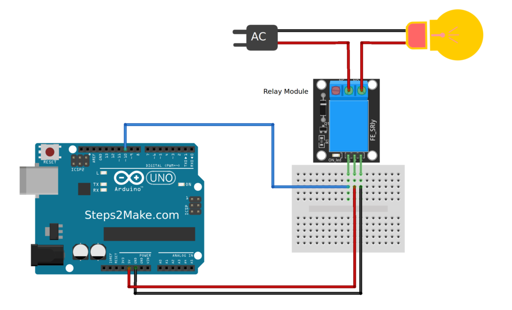

Like most design students, there was a time when I wanted to create impact.
Today, I aim to reduce impact through my design- the impact on our environment.


When I engage in designing for impact, I put the environment first in my sensitization of values.
Belonging to a generation that saw revolutionary transformations, I believe I am responsible for both the ecological imbalance and for restoring it. It generates a juxtaposition of generating impactful designs for reducing adverse impact on the environment.

Remote manipulation of traffic signals to ensure smooth ambulance passage
Enabling an immersive learning experience with a gamified approach

Inspiring kids to deposit general plastic trash

Encouraging community gardening and home plants

Here are glimpses of things that I love to do, on slower days.


GAMIFIED E-LEARNING
Problem Identification
A prominent FinTech organization from Abu Dhabi approached the firm I am working with, to generate e-learning courses that will act as basic introduction to FinTech and associated concepts. The requirement was primarily to engage the audience with gamification.
Preliminary research
Tier 2 research
Interview and surveys:
Conclusion
Targeted learner group with expected introductory knowledge level was identified. After identifying LMS constraints, content gamification strategy was adopted instead of structural gamification.
Defining the problem
Audience characteristics:
Age group: 25-55
Occupation: Working professionals in FinTech industry
Cultural context: Primarily middle eastern
Expected knowledge level: Aware of basic financial terms used in the banking space.
Content Division
Scoped content was broadly categorized into 3 areas – Primer to Digital Finance, Primer to Fintech Ecosystem, Primer to Big data and Artificial Intelligence
A comprehensive E-learning solution was required to engage the audience, and conclude by testing the retention of knowledge with a summative assessment towards the end of each primer module.
Navigating the solution space
For thorough retention, based on empirical knowledge about learning psychology, the broad content topics were fragmented into individual modules spanning no longer than 40 minutes.
Solution building activity was carried out iteratively, for these fragmented modules. An example is quoted below
Interactive example for explaining optimization problems
A stepped down example was required to relate optimization problems with general surroundings an in an easily consumable form with common knowledge.
Approach 1:
A simplified graph coloring problem was presented with a concentric circle graph for picking color from a palette and using minimal number of colors to color regions with adjacent sides having a distinct color.
Approach 2:
A bead placement problem with constraints was devised to challenge learner in finding an optimal solution.
While the graph coloring problem was intuitive, the development team faced challenges in including the heavy interaction in the SCORM package (final deliverable) of the course. Hence, approach 2 was used.
Implementation
The e-learning courseware underwent this lifecycle within the team:
R&A = Review and approval from client
I played a key role until the storyboarding stage. Here are a few examples from storyboarding. A total of 8 such storyboards were created as part of this project
Content curation
Involved the study of various publications and papers
Gathering information over the web from various articles, blogs, surveys and studies
High level ordering and flow

Snapshots of notes from an ideation and brainstorming session. Logical flow of the module was decided
Deriving analogies to explain concepts

Various examples from the textile industry were quoted to assist the learner in drawing parallels between structured and unstructured data.
Structuring lessons to enable scaffolding technique (gradually increasing difficulty level and decreasing hints, solutions to help learner achieve subject mastery)
Instead of a traditional approach in explaining a lesson and quizzing the learner, a learn-as-you-go methodology was adopted, where the learner was asked to read, understand and then perform an action based on it. This gradually engaged learner in the higher orders of learning from Bloom’s taxonomy.

User was asked to pick an option based on inferencing. Previous lesson explained the differences between structured and semi structured data.
Game interface, instructions and lucidity
Games were carefully designed to avoid distracting the user with too much input. Simplicity of the interface ensured that people of diverse ages could approach the game without being intimidated.
Another example of scaffolding. Learner was introduced to rounds of information, following by one round of tackling an opponent – time.
Time based complexity was balanced with ease in approaching the question. Investigative feedback in with audio-visual connect was provided for increased retention.
Post this, my role morphed into communications and usability testing.
Usability testing took a day for each individual module, where we shared the course with other IDs or employees from the organization, who had not participated in the project.
We asked them to take the course live, on MS Teams call, and recorded their reactions, frustrations and excitement levels. Changes in game interfaces and visual elements were made one final time.
Shortcomings
GREEN CORRIDOR
Problem Identification
The problem was identified when a discussion struck between our group about the frequency of ambulance sirens, we heard at our regular hang out. In observing more, we found out that an ambulance passed the street once every 7 minutes, because of the location of a hospital nearby. They were often stuck in traffic because of traffic bottlenecks at road intersections and signals.
Preliminary research
Tier 2 research
Interview and surveys:
Traffic commissioner – Pune City
“We have set up a green corridor before, for urgent organ transportation. We did this by manually redirecting heavy traffic areas. However, we operate on limited manpower. It is not possible for us to deploy personnel for every ambulance passage.”
Ambulance drivers
“We sometimes have to put our life on the line, to save another person’s life. But we often face incidences where reach a little too late, because traffic was mismanaged, and people refused to budge.”
Conclusion
To address this concern in Pune city, a technical arrangement was necessary which would allow traffic controllers to remote manipulate the signals in the pathway.
Defining the problem
Various parameters were considered and compared affecting ambulance delay: Traffic signals, vehicle density, road condition, ambulance driver’s skill and location of source/destination.
Of these, traffic signal and vehicle density were most impactful. We decided to address these by proposing a system modelled by both hardware and software.
Navigating the solution space
For thorough retention, based on empirical knowledge about learning psychology, the broad content topics were fragmented into individual modules spanning no longer than 40 minutes.
Solution building activity was carried out iteratively, for these fragmented modules. An example is quoted below
Interactive example for explaining optimization problems
Key challenges were identified and classified in the priority matrix, majorly based on tier 2 research
Approach 1:
Connecting signal hardware with fiber optic cabling : Physical resilience and inner loop control was addressed, but integration with existing system was taxing.
Approach 2:
Using raspberry Pi microcontroller with WiFi connectivity module ESP8266: Inner loop control was achieved and integration with existing system became easier, but wireless connectivity made the system highly unreliable.
Approach 3:
Using Arduino microcontroller with GSM (Global system for Mobiles) shield: Inner loop control and reliability issues were addressed. Integration with existing system was also easily possible.
After study and analysis of the different ways, approach 3 was selected for these reasons:
Implementation
Relational Database for storing signal data with unique IDs – Route ID, Intersection ID, Pole ID, Light ID Interface to configure and feed signal data and manipulate signals real time by sending commands to microcontroller setup.
Google maps API was used for control room visualization and route selection.
Interfacing GSM shield with microcontroller board for receiving commands and connecting individual signal lights with microcontroller board using a relay for high voltage signal connections
The testing commenced with creating traffic signal prototypes with readily available resources.
These were then connected to the microcontroller board to test basic functioning like ON / OFF control, delay control
At this point, the Arduino Uno board was replaced with Arduino mega, for these reasons:
Number of ports: Number of digital pots on Uno were limited.
Cost efficiency: To reduce usage of a board for every signal pole, we decided to prototype a typical intersection, comprising of 4 signals and 20 lights
Sanity test setup with Arduino Uno
Shortcomings